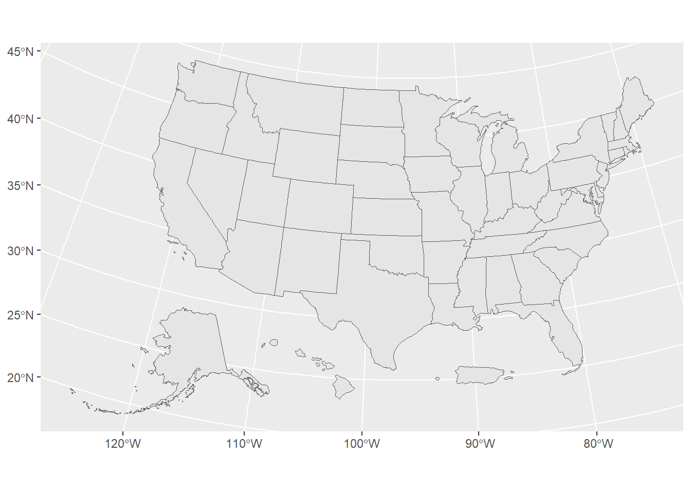
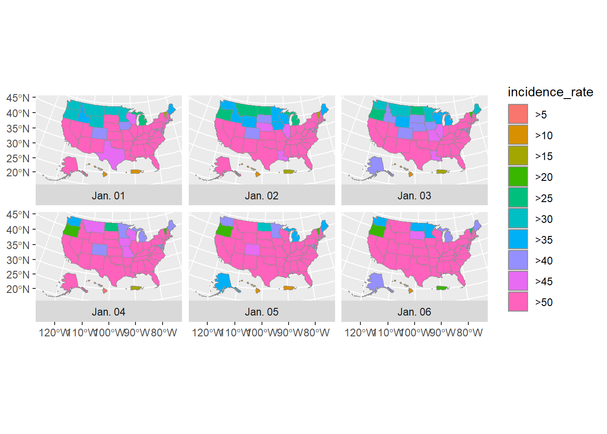
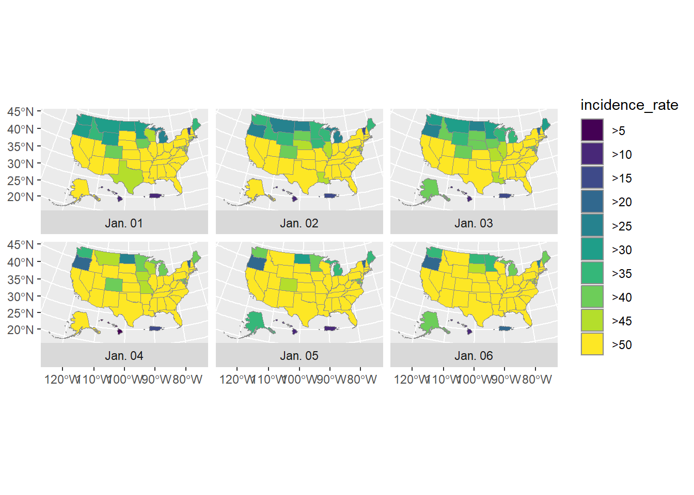
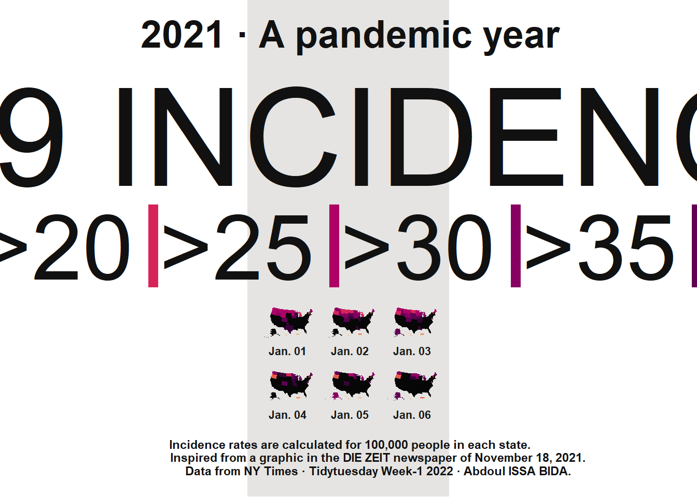
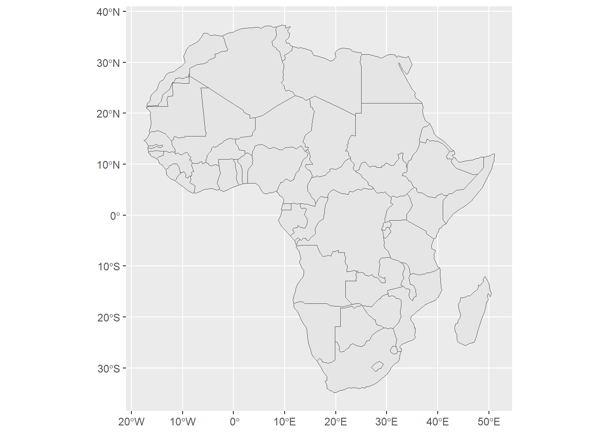
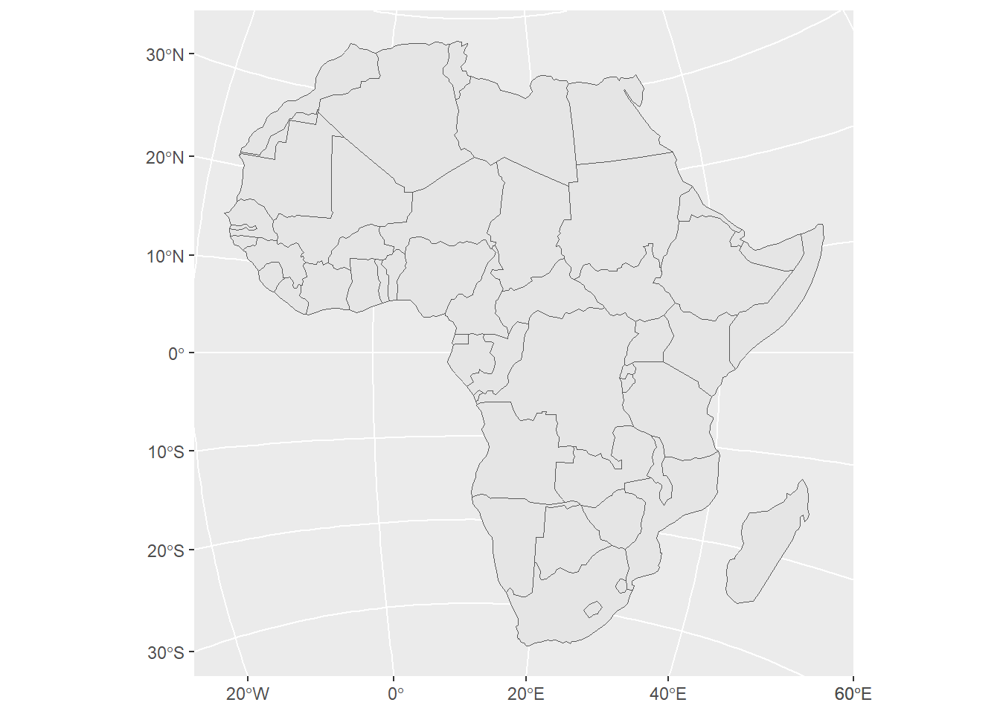
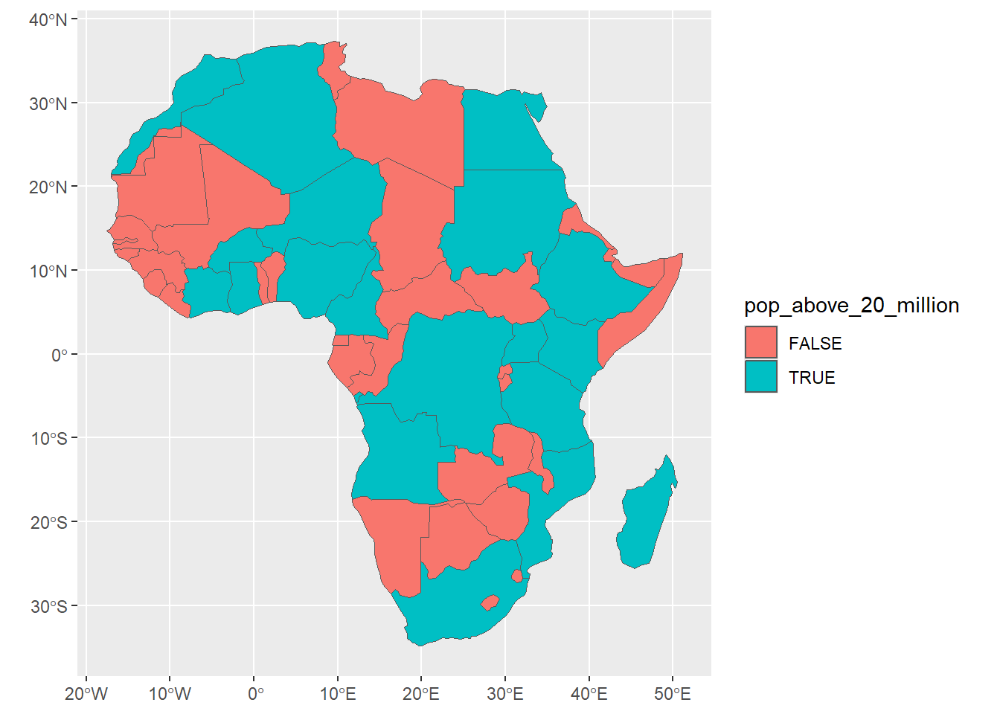

library(sf)
library(terra)
library(tidyverse)
library(tidymodels)
library(finalfit)
library(gt)
library(gstat)
library(spatialreg)
library(slider)SPATIAL REGRESSION
library(tigris)
library(zoo)
library(colorspace)
library(janitor)covid_data <-
read_csv("rest/covid-us-states.csv") %>%
dplyr:: select(-fips)usa_states <-
read_csv("rest/population-by-state.csv") %>%
dplyr:: select(State, Pop)### from tigris package
usa_states_geom <- states(
cb = TRUE,
resolution = "20m",
progress_bar = FALSE
) %>%
shift_geometry() %>%
clean_names() %>%
dplyr::select(name) usa_states_geom |>
ggplot()+
geom_sf()
covid_cases <- covid_data |>
group_by(state) |>
mutate(pd_cases = lag(cases)) |>
replace_na(list(pd_cases = 0)) |>
mutate(
daily_cases = if_else(cases > pd_cases,cases- pd_cases,0)
) |>
ungroup() |>
arrange(state,date)covid_cases <- covid_data |>
arrange(state, date) |>
group_by(state) |>
mutate(
pd_cases = coalesce(lag(cases), 0),
daily_cases = if_else(cases > pd_cases, cases - pd_cases, 0)
) |>
ungroup()## use zoo to compute rolling mean
covid_cases_rm <- covid_cases |>
mutate( roll_cases = rollmean(
daily_cases,
k = 5,
fill = NA
))covid_cases_slide <- covid_cases |>
mutate(
roll_cases = slide_dbl(
daily_cases,
mean,
.before = 4, # 4 previous days
.after = 0, # current day only
.complete = TRUE
)
)covid_cases_centered <- covid_cases |>
arrange(state, date) |>
group_by(state) |>
mutate(
roll_cases = slide_dbl(
daily_cases, mean,
.before = 2, .after = 2, # 2 before + today + 2 after = 5
.complete = TRUE
)
) |>
ungroup()covid_cases_rm <- covid_cases_rm |>
left_join(usa_states, by = c("state" = "State")) |>
drop_na(Pop)covid_cases_rm <- covid_cases_rm |>
mutate(incidence_rate = (roll_cases * 10^5)/Pop) |>
mutate(incidence_rate = cut(
incidence_rate,
breaks = c(seq(0,50,5),Inf),
include.lowest = TRUE
) |>
factor(labels = paste0(">",seq(0,50,5))))covid_cases_rm <- covid_cases_rm |>
filter(date >= "2021-01-01") |>
dplyr::select(state,date,incidence_rate)usa_states_geom_covid <- usa_states_geom |>
left_join(covid_cases_rm, by = c("name" = "state")) |>
mutate(fancy_date = fct_inorder(format(date,"%b. %d"))) |>
relocate(fancy_date,.before = incidence_rate)usa_states_geom_covid_six_days <- usa_states_geom_covid |>
filter(date <= as.Date("2021-01-06"))usa_states_geom_covid_six_days |>
ggplot()+
geom_sf(
aes(fill = incidence_rate),
size = 0.05,
color = "grey55"
)+
facet_wrap(
vars(fancy_date),
strip.position = "bottom"
)
usa_states_geom_covid_six_days |>
ggplot()+
geom_sf(
aes(fill = incidence_rate),
size = 0.05,
color = "grey55"
)+
facet_wrap(
vars(fancy_date),
strip.position = "bottom"
)+
scale_fill_viridis_d()
usa_states_geom_covid_six_days %>%
ggplot() +
geom_sf(
aes(fill = incidence_rate),
size = .05,
color = "transparent"
) +
facet_wrap(
vars(fancy_date),
strip.position = "bottom"
) +
scale_fill_discrete_sequential(
palette = "Rocket",
name = "COVID-19 INCIDENCE RATE",
guide = guide_legend(
title.position = "top",
title.hjust = .5,
title.theme = element_text(
family = "Times New Roman",
size = rel(9),
margin = margin(
b = .1,
unit = "cm"
)
),
nrow = 1,
keyheight = unit(.3, "cm"),
keywidth = unit(.3, "cm"),
label.theme = element_text(
family = "Times New Roman",
size = rel(6),
margin = margin(
r = 5,
unit = "pt"
)
)
)
) +
labs(
title = "2021 · A pandemic year",
caption = "Incidence rates are calculated for 100,000 people in each state.
Inspired from a graphic in the DIE ZEIT newspaper of November 18, 2021.
Data from NY Times · Tidytuesday Week-1 2022 · Abdoul ISSA BIDA."
) +
theme_minimal() +
theme(
text = element_text(
family = "Times New Roman",
color = "#111111"
),
plot.title = element_text(
size = rel(2.5),
face = "bold",
hjust = 0.5,
margin = margin(
t = .25,
b = .25,
unit = "cm"
)
),
plot.caption = element_text(
hjust = .5,
face = "bold",
margin = margin(
t = .25,
b = .25,
unit = "cm"
)
),
strip.text = element_text(
size = rel(0.75),
face = "bold"
),
legend.position = "top",
legend.box.spacing = unit(.25, "cm"),
panel.grid = element_blank(),
axis.text = element_blank(),
plot.margin = margin(
t = .25,
r = .25,
b = .25,
l = .25,
unit = "cm"
),
plot.background = element_rect(
fill = "#e5e4e2",
color = NA
)
)
library(rnaturalearth)
africa_countries <- ne_countries(
returnclass = "sf",
continent = "Africa"
)africa_countries |>
ggplot()+
geom_sf()
library(crsuggest)
africa_countries |>
suggest_top_crs()[1] 5523africa_countries |>
st_transform(5523) |>
ggplot()+
geom_sf()
africa_countries |>
dplyr::select(name,pop_est) |>
mutate(pop_above_20_million = if_else(pop_est> 20000000,TRUE,FALSE)) |>
ggplot()+
geom_sf(aes(fill = pop_above_20_million))